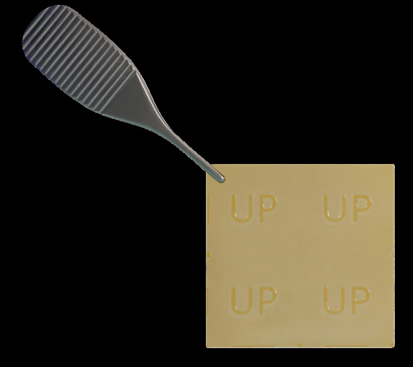
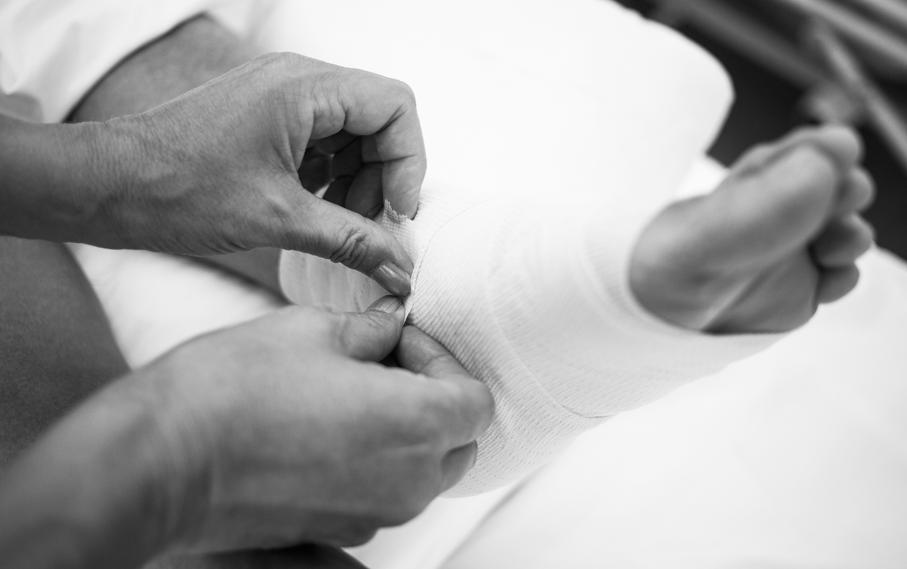
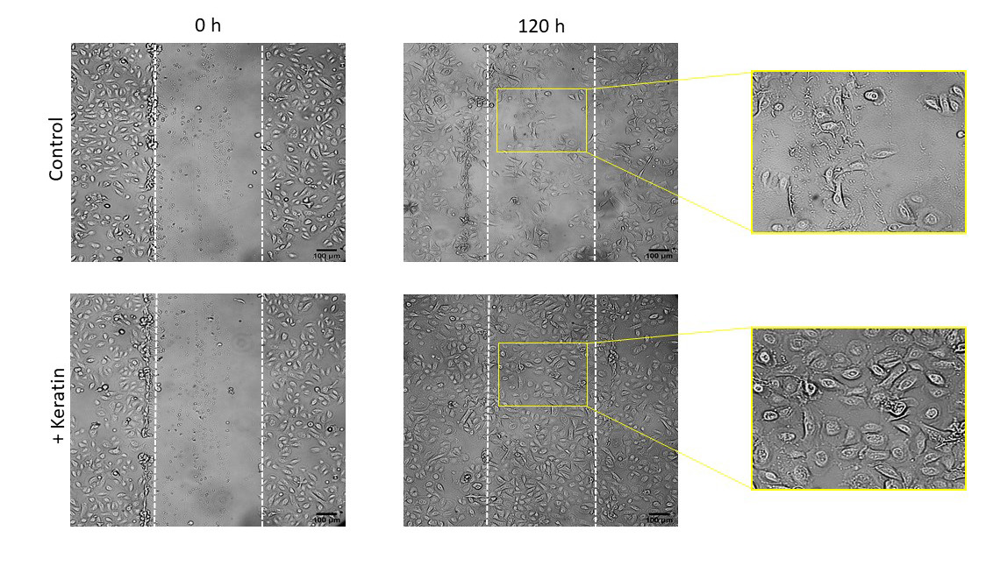

ProgenaCare
ProgenaMatrix™ Keratin Matrix
A hydrated human keratin matrix studied in a randomized trial of application schedules.

How it works
A human keratin matrix
Per FDA K182010 and published papers.
Swipe to see each stage →
Human keratin
Non-cellular; not tissue based.

Hydrated matrix
Supplied hydrated; applied to dry or exuding wounds.

Non-resorbing
Does not resorb; reapplication schedule studied in a 2024 trial.
Evidence
Clinical studies
Manufacturer case gallery
ProgenaCare case reports (via Venture Medical). Single patients, not controlled evidence.
Swipe through cases →
3-year chronic VLU, medial malleolus
93M, 24 cm2, failed prior bilayer LSE. Weekly applications plus 3-layer compression from 10/16/23. Healed by 11/27/23.
Stage III heel pressure injury, diabetic
81M, recalcitrant after NPWT, revascularization and amniotic grafts (5.3x3.6 cm). Weekly applications; closed at 8 weeks.
15-year VLUs: ProgenaMatrix vs gauze
56-year-old. Medial ulcer with ProgenaMatrix closed in 14 visits (~70 days); lateral gauze ulcer not closed at visit 14. Same patient, n=1.
Pressure ulcers in post-acute care
Tunyiswa Z, Frade S, Dirks R, Walthall H. IJTR 2026-074. Venture Medical co-author.
Diabetic foot ulcers: every 2 weeks vs weekly
Int Wound J. 2024. doi:10.1111/iwj.70029 (NCT05797285)
Explore full studyDesign, results, limitations, citation
- Compared two application schedules; there was no standard care only arm
- Mean percent area reduction 94.7% vs 84.8%; grafts used 3.9 vs 6.2
- Small, sponsor funded pilot (ProgenaCare)
Diabetic lower extremity wounds
Wounds. 2024. doi:10.25270/wnds/23139
Explore full studyDesign, results, limitations, citation
Case series without control group.
Venous leg ulcers
PMC10715444
Explore full studyDesign, results, limitations, citation
Prospective quality assurance series; no control group.
Details
Product information
What it isHuman keratin matrix
- Hydrated, non-cellular, non-resorbing keratin matrix
- FDA 510(k) K182010, cleared January 17, 2019, product code KGN
- Cell Constructs I, LLC / ProgenaCare Global
IndicationsPer FDA K182010
Dry and exuding partial and full thickness wounds: pressure ulcers (stage I to IV), venous stasis ulcers, mixed vascular ulcers, diabetic ulcers, donor sites/grafts, first and second degree burns, superficial injuries, cuts, abrasions and surgical wounds. Not for third degree burns.
SizesFrom IFU and one-sheet
IFU lists 2x2, 4x4, 6x6, 10x10 and 12x2 cm. The Venture one-sheet (1/12/26) also lists 3x3 cm: PM3002, PM3003, PM3004, PM3006, PM3010, PM2012.
Source documentsPublic references
- FDA 510(k) K182010 summary
- Int Wound J 2024 dosing RCT; Wounds 2024 case series; PMC10715444 VLU series
- ProgenaMatrix One Sheet, sell sheet, IFU, IJTR paper, white paper, Chronic/DFU/VLU/PU case studies (Venture Medical Linktrees, not yet reviewed)
Claims check (internal)Flags from source verification
- RCT compares dosing only; no claim vs standard care.
- 'Only human keratin matrix' claim excluded (marketing, unverified).
- progenacare.com not verified (fetch blocked).
- IFU, brochure, images missing.
Contact
Talk with Sheridan
Text Abiad to set up a visit, discuss a patient, or schedule an in-service.
Please do not include patient information in text messages.